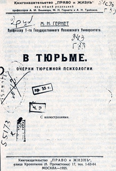
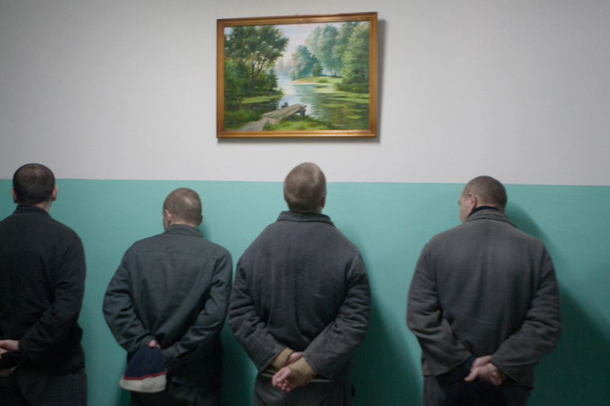
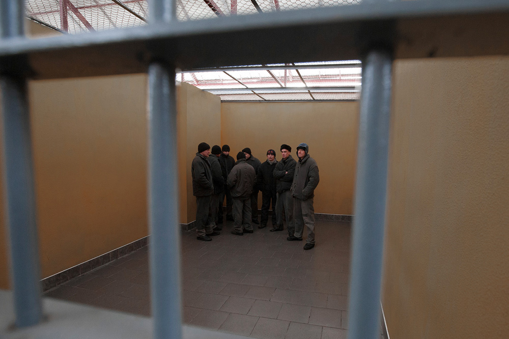
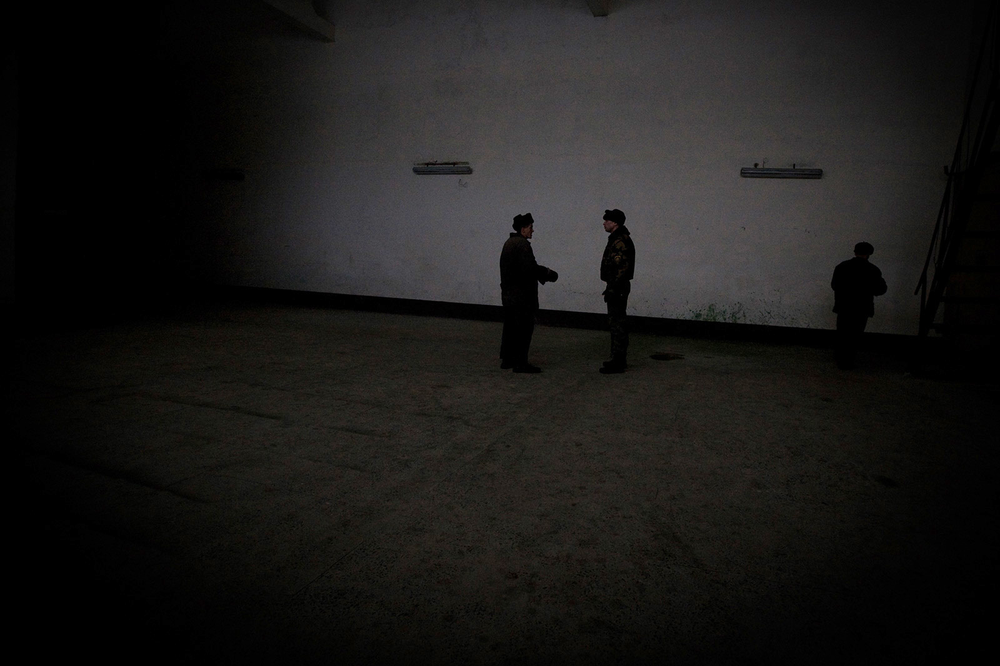
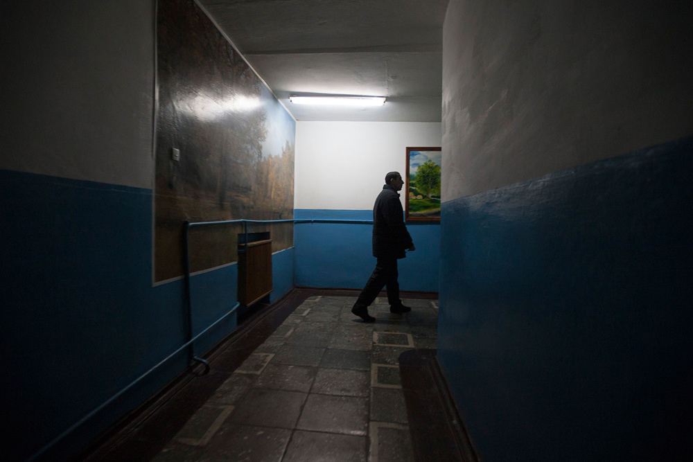

Тюрьма человека не исправит. С этим утверждением согласятся, пожалуй, все критики современной пенитенциарной системы: как реформисты, так и аболиционисты. Но дальше между ними — сплошные разногласия. Приверженцы реформ обвиняют противников тюрьмы в утопичности, в ответ получая обвинения в половинчатости мер.
«Тюрьма служит школой криминальной профессионализации, а не местом исправления», — писал ещё в 1930 году профессор уголовного права М. Н. Гернет в книге «В тюрьме. Очерки тюремной психологии». Однако громче и явственнее критика тюрем зазвучала позже, во второй половине ХХ века — именно тогда в большинстве западных стран произошло осознание «кризиса наказания». Проявления этого кризиса никуда не исчезли и сегодня: рост зарегистрированной преступности, очевидная неэффективность общей превенции преступлений, в частности высокий уровень рецидива. В дополнение к этому, многочисленные исследования фиксируют необратимые измененияПо данным ВОЗ, из более чем 2 млн заключённых в исправительных заведениях Европы, по крайней мере 400 000 страдают от значительных психических заболеваний и ещё большее количество имеют общие психические расстройства, такие как депрессия и беспокойство. психики человека (например, сенсорную депривацию и изменение восприятия пространственной структуры, а также различные формы психоза), которые наступают после 5-6 лет нахождения в местах лишения свободы.
70-е годы во Франции были отмечены появлением Группы информации по тюрьмам (ГИТ), инициированной Мишелем Фуко, и сформированного в результате её деятельности Комитета действия заключённых. В итоге правительством был проведён ряд реформ. Впрочем, ГИТ всегда заявляла, что не предлагает и не требует реформы пенитенциарной системы: «Никакого реформизма, только радикальное разоблачение самого намерения “исправить преступника”».
Ещё одним важным этапом стало возникновение «радикальной» криминологии, которое ознаменовала книга британских авторов Я. Тэйлора, П. Уолтона и Дж. Янга «Новая криминология» (1973). В их проникнутом неомарксистской критикой анализе правонарушитель рассматривается не только как жертва уголовной юстиции, но и общества в целом. Главным криминогенным фактором является неравенство: классовое, половое, этническое.
Некоторые современные криминологи-аболиционистыАболиционисты в криминологии стремятся к полному отказу от института тюрьмы. придерживаются мнения, что вид наказания и способ его исполнения должно устанавливать не государство, а родные и близкие преступника или жертвы. Параллели с этим мнением можно усмотреть в законе шариата, когда в случае убийства или нанесения увечий семья жертвы имеет право определить возмездие: настоять на наказании, принять материальную компенсацию или простить преступника.

За отмену тюрем традиционно выступает «Анархический чёрный крест». Среди альтернатив, предлагаемых анархистами, — общественные суды и самоуправление в решении вопросов наказания. Кроме того, предполагается, что падение капиталистических отношений приведёт к исчезновению преступлений, мотивом которых является частная собственность.
Подобная позиция многим кажется довольно утопичной, и поэтому они считают лучшим исправить недостатки существующей пенитенциарной системы. В последних отчётах UNICRI (United Nations Interregional Crime and Justice Research Institute) утверждает, что плохие условия содержания (как санитарные, так и социальные) способствуют созданию криминальной среды внутри тюрем. Переполненность тюрем — проблема мировая. Она наблюдается и в Беларуси, и в Польше, Чехии, Венгрии и других странах.
Неэффективность системы ещё раз подтверждают низкая ресоциализация бывших заключённых и высокий процент рецидивов. Это характерно многим странам: в Беларуси рецидивы составляют 50%, а в Польше с 2007 по 2012 гг. количество повторных преступлений увеличилось почти наполовину. Не стоит упускать из внимания и экономический фактор: расходы на содержание заключённых растут, а их семьи зачастую оказываются в бедственном положении.
Сторонники тюремной реформы считают, что в судебном процессе необходимо сосредоточиться на реабилитации преступника и индивидуально подходить к выбору формыПри выборе формы наказания следует, безусловно, учитывать тяжесть и характер преступления, и здесь стоит отметить, что самая распространённая статья УК РБ — кража. наказания, как например: вместо заключения под стражу внедрить надзор за правонарушителями в рамках системы пробации, по возможности использовать общественно полезные исправительные работы, а также сокращать сроки заключения. Помимо положительного эффекта на ресоциализацию, такие альтернативы тюремному заключению, как правило, менее затратны.
Таким образом, с тем, что современную пенитенциарную систему необходимо менять, согласны многие. Некоторые криминологи озвучивают весьма смелые прогнозы о том, что через 30–40 лет тюрьмы исчезнут. Но относительно того, что придёт им на смену, пока однозначного ответа нет. Когда мы начинаем рассуждать о том, каким должно быть наказание, обнаруживается масса вопросов, неожиданных выводов и противоречий, начиная с определения самого понятия преступления.
В чём основная проблема современной пенитенциарной системы? Возможно ли упразднить институт тюрьмы, и как должно выглядеть наказание? С этими вопросами мы обратились к бывшим заключённым и правозащитникам.
Наста Лойка
Праваабарончы цэнтр «Вясна»Асноўная хіба — гэта невызначанасьць мэтаў самой сыстэмы і распрацоўкі механізму яе дасягненьня. Адны навукоўцы асноўнай мэтай пакараньня бачаць выхаваўчую/перавыхаваўчую, іншыя — кампэнсацыйную, а яшчэ нехта — карную і г.д. І вось існуе гэты вечны тэарытычны дыспут у той час, калі ўжо рэальныя людзі сядзяць у турмах!
Я зашмат ведаю пра катаваньні ў нашых турмах, пра факты забойстваў з боку адміністрацыі. Пра ўмовы ўтрыманьня асобная доўгая і балючая тэма. Шмат хто праз яе праходзіць. І пры гэтым большасьць не ведае нічога, ім усё роўна.
Відавочна, рэфармаваньне неабходнае, і тэрмінова. Праблем на гэтым шляху тры. Першая — добрая тэарытычная распрацоўка, другая — фінансавы бок, трэцяя — ментальная, псыхалягічная. Ня ведаю, колькі трэба выхоўваць ахоўніка, каб ён стаў добрым.
Чалавек не нараджаецца маньякам, яго такім робіць выхаваньне, асяродак, грамадзтва, дзяржава
Сучасная агульнаэўрапейская тэндэнцыя ідзе да гуманізацыі пакараньняў: усё менш выкарыстоўваецца зьняволеньне пры фінансавых і іншых негвалтоўных злачынствах, усё больш надаецца ўвагі ўмовам утрыманьня і псыхалягічнай працы са зьняволенымі.
У тэарытычнай распрацоўцы важна ўлічваць агульную адказнасьць соцыюма за кожнае злачынства: чалавек сам па сабе не нараджаецца маньякам, яго такім робіць выхаваньне, асяродак, грамадзтва, дзяржава. Таму важна ўсім разумець гэта і падзяляць яго адказнасьць. Важна падымаць псыхалягічную культуру ўсяго грамадзства, з садку шмат працаваць зь дзеткамі ў гэтым напрамку, вялікая функцыя тут сацыяльнай апекі і ўзаемасувязі людзей паміж сабой. То бок гэта грунтоўныя праблемы, якія ня вырашыць за кароткі час, нават з належным асэнсаваньнем. З фінансавага боку любая дзяржава зацікаўленая патраціць грошы на сацыяльную сфэру, чым на рамонт калёніі. Але так быць не павінна. Гэта частка агульнай адказнасьці. Альтэрнатыўныя мадэлі пенітэнцыярнай сыстэмы важна дасьледаваць і запазычваць. Гэта і эфэктыўней і таньней.
Ад турэмнага зьняволеньня было б добра адмовіцца. Не могуць сьцены зьмяніць чалавека да лепшага. Гэта могуць толькі іншыя людзі. Асноўным плюсам турэмнай мадэлі называюць прафіляктычныя меры, каб чалавек ня зьдзейсьніў новыя злачынствы, але гэта толькі часовы фактар. Пакараньне павінна быць стымулюючым і разьвіваючым. Спартовыя, працоўныя і псыхалягічныя віды дзейнасьці маглі б гэтаму спрыяць куды эфэктыўней за турэмны рэжым, хаця момант прымусовасьці застаецца.
Александр Францкевич
Анархист, бывший политзаключённыйНа мой взгляд, основная проблема пенитенциарной системы — факт её существования. Она существует в любой стране не для того, чтобы исправлять преступников, — этот взгляд критиковал ещё Фуко в «Надзирать и наказывать» — а для создания атмосферы страха в обществе, террора и для того, чтобы контролировать преступников. Но она не может изменить образ жизни человека, увязшего в криминале. В Беларуси тоже много говорится об исправлении тюремно-лагерной системы, но милиция и органы правопорядка часто сами выступают провокаторами преступлений (призывая человека, сотрудничающего с ними, нарушать закон, дабы войти в доверие, к примеру). Это та ниша, с помощью которой наши репрессивные органы получают основной официальный (в виде раскрываемости) и неофициальный (в виде кураторства и «крыши») доход, поэтому им выгодно, чтобы конвейер работал без остановки. Главная проблема — в самом факте существования тюрем и лагерей.

Я выступаю за переосмысление многих процессов в обществе, за отказ от репрессивных механизмов как институтов, за замену власти прямой демократией. На этом основана моя альтернатива воздействия на преступников. Современная «исправительная система» никого не исправляет, но если поставить себе такую цель, единственным методом борьбы с посягательством на жизнь или здоровье других людей будет всеобщее вооружение, добровольные отряды самообороны и система санкций, накладываемых обществом на преступника.
Я считаю, что отказаться от тюремного заключения можно. Наказание может быть другим: от простого порицания до изгнания из общества и казни за особо тяжкие преступления. Главное, чтобы эти наказания определялись общественными, а не государственными механизмами. Это может быть как общее собрание, так и третейский суд, назначенный, опять же, людьми, заинтересованными в процессе. Здесь также встаёт вопрос о смертной казни. Моя основная критика смертной казни в Беларуси исходит из того, что этот инструмент сейчас дан механизму, который никак не зависит от общества и является паразитом над беларуским народом, как и в любом другом государстве. Доверять такому Левиафану право распоряжаться чужой жизнью, я считаю, очень опасной практикой, поэтому в нынешних условиях я, конечно, выступаю за мораторий. Но мне кажется, если общество будет назначать санкции в отношении преступника и в отдельных случаях изгнание не решит вопроса с человеком (допустим, серийным маньяком), то запирать его в клетку и насиловать волю на протяжении всей жизни не является гуманным выбором. Поэтому казнь мне представляется как исключительный метод наказания массовых убийц.
Алексей
Бывший заключённый израильской военной тюрьмы за попытку отказа от службы в армии (Украина/Израиль)Я вполне понимаю логику и функциональное значение этой системы при капитализме, но нужно также понимать, что заявляемые функции на самом деле не выполняются. Ну какие функции она де-юре выполняет? Предотвращение преступлений, изоляция людей и их исправление. С последним самые большие проблемы: людей в сущности исправлять-то не нужно, а если нужно по медицинским показателям, то им тюрьма не поможет. Если причина большинства преступлений экономическая, не проще ли устранить её, чем пытаться менять людей?
Я какое-то время сидел в израильской военной тюрьме, а ещё мне довелось побывать в качестве подневольного чернорабочего в гражданской тюрьме для палестинских заключённых. Военная тюрьма сильно отличается от обычной. Сажать солдата в тюрьму — трата ресурсов как самого солдата, так и тех, кто его обслуживает. Так что задача военной тюрьмы такая: в короткие сроки с наименьшими затратами — а по возможности с использованием заключённого — превратить его из солдата, который не функционирует, в солдата, который функционирует. Поэтому сажают на короткое время, заставляют работать и проводят усиленный курс дисциплины, чтобы вспомнили «курс молодого бойца». Кроме того, мне удалось побывать в гражданской тюрьме. Там обстановка совсем другая: проблема не с тем, чтобы надзиратели не муштровали, как у нас, а со свободой в глобальном смысле. Там бы я совсем не хотел оказаться.
Проблема не в удобной постели и питании, а в ограничении передвижения и изгнании
Нельзя исправить часть механизма, не затронув его целиком — нельзя отказаться от тюремной системы, не меняя общественно-политическую. Изменив её, мы изменим и само понятие «преступление» (большинство из которых имеют экономические причины). Тогда потребность в тюремных заключениях исчезнет. Но, конечно, могут быть люди, которых придётся изолировать от общества в силу их психических расстройств.
Конечно, условия в России и, например, Норвегии несколько отличаются. Но сути это не меняет. За те 20 дней, что я сидел в Израиле, я побывал в четырёх разных местах. В карцере было совсем плохо, а в гражданской тюрьме — лучше. Но проблема же не в удобной постели и питании, а в ограничении передвижения и изгнании из естественной среды существования. Очевидно, что закрепившаяся система неформальных отношений в тюрьме при любых изменениях будет пытаться вернуться в своё дореформенное состояние. Заключённые и надзиратели уже приняли определённые роли и модели поведения, и вот их будет изменить сложнее всего, это потребует сильного контроля извне.

Александр Володарский
Анархо-синдикалист, художник-акционист, блогер, один из авторов Nihilist.li (Украина/Германия)Я сталкивался с украинской пенитенциарной системой изнутри (немного пребывания в СИЗО, немного в колонии-поселении), много общался с заключёнными с разными отсиженными сроками, за разные преступления. Основной недостаток пенитенциарной системы — её репрессивный характер. Она абсолютно не работает с социальной первопричиной преступлений, а лишь карает людей, совершивших их. Жестокость и неэффективность идут здесь рука об руку. Тюрьма становится автономным образованием, которое не перевоспитывает преступников, а напротив, служит формированию «преступников» как некой обособленной социальной прослойки и субкультуры. Тюрьмы в совокупности со всей карательной системой устроены так, что они никогда не опустеют.
«Преступный склад личности» — это социальный феномен: количество преступников напрямую зависит от общества, его законов и порядков
Я выступаю скорее не за реформирование тюрьмы, а за её ликвидацию. Пенитенциарная система не только антигуманна, она ещё и крайне неэффективна. Угрозы, от которых она защищает, порождены ей же. В Норвегии или Швеции количество заключённых на 100 000 населения в несколько раз меньше, чем в Украине, а в США — в несколько раз больше. Это значит, что «преступный склад личности» нельзя списать на врождённую предрасположенность — это социальный феномен: количество преступников напрямую зависит от общества, его законов и порядков. Риск — это, конечно же, неизбежная переходная стадия, поскольку есть люди, для кого тюрьма стала образом жизни и единственным домом. Они покидают её, зная, что вернутся обратно. Им нужна особая ресоциализация, и её механизмы только предстоит разработать. Но сама система не хочет реформ: тюрьмы, суды, полиция являются частью одного механизма, который не хочет и не планирует меняться. Если смотреть шире, всё государство, весь социальный строй и социальные институты так или иначе базируются на страхе тюрьмы, поэтому борьба против пенитенциарной системы — это борьба против всего государства.
От тюрьмы как от способа наказания нужно отказаться. Вопрос в том, нужно ли вообще наказание. Я думаю, нужны действенные механизмы предотвращения посягательств на жизнь, здоровье и свободу. И чтобы этого добиться, не достаточно карать. Нужно устранить социальные предпосылки к преступности (бедность, неравенство), психологические предпосылки (атмосфера конкуренции, борьбы за успех, которая часто принимает болезненные формы и ведёт к насилию). Даже социопаты и психопаты вполне могут быть интегрированы в общество, если научить их жить с их особенностями психики. Преступления без жертвы должны исчезнуть как понятие. Что касается краж, хулиганства, мошенничества, вандализма: человек, совершивший проступок, должен иметь возможность компенсировать и исправить его последствия. В категорию «неисправимых» попадают разве что изнасилования, тяжёлые увечья и убийства, но после устранения упомянутых выше предпосылок эти случаи будут довольно редкими, чтобы разбираться с ними в индивидуальном порядке.
Различия между пенитенциарными системами Украины и Германии, безусловно, есть. До недавнего времени в Украине было очень легко попасть в СИЗО. Немецкая же карательная система гораздо более мягкая, особенно к лёгким преступлениям. Но её не стоит рассматривать как пример: немецкие тюрьмы хоть и более гуманны, но остаются фабриками по производству преступников. Я общался с девушкой, которая недавно провела год в немецкой тюрьме за магазинные кражи. Она рассказала, как на её глазах заключённые женщины подсаживались на тяжёлые наркотики, как убийцы сидели вместе с теми, кто совершил лёгкое преступление, потому что не хватало женских камер. Всё очень напоминает Украину, разве что без чёрной плесени на стенах, с лучшим питанием, медобслуживанием и меньшим насилием со стороны надзирателей.
Павел Сапелко
АдвокатНа мой взгляд, основными недостатками современной пенитенциарной системы в универсальном смысле является то, что она осталась далеко позади происходящих в обществе процессов: прогресс в науке, экономике и социальной сфере заставляет нас по-другому жить, мыслить, строить отношения. В сфере же науки о наказаниях царит почти средневековье. Пора бы понять: преступность и преступники сегодня и 50-100 лет назад — это разные сущности и явления. Соответственно, подход к их наказанию и исправлению должен измениться. Также должны измениться цели наказания, причём, не на словах, а на деле. До сих пор ни государство, ни общество не освободились от понимания роли наказания как мести за содеянное; отсюда спокойное отношение к тому, что права заключённых и социальные стандарты их содержания за редким исключением минимизированы. Даже вполне благополучные государства могут позволять себе содержание преступников на нижней границе нормального. Редкие государства законодательно и фактически сделали лишение свободы в пенитенциарном заведении по-настоящему исключительной мерой, применяемой лишь к тем, чьё нахождение в обществе будет безусловно опасным, тогда как остальные применяют лишение свободы лишь на основании предположения о потенциальной опасности.
Что может изменить ситуацию? Думается, только совместная, свободная от стереотипов работа юристов, криминологов, психологов, статистиков, педагогов. Плодом их усилий могут стать новые концепции исправления и наказания, может быть — перевоспитания. Наказание, особенно если преступление задевает частные интересы, должно постепенно уступить место компенсаторным мерам; штраф в чистом виде, когда он ложится неподъёмным грузом не только на преступника, но и на его близких, можно заменить обязанностями, которые обременят только виновного. Конфискация имущества (за исключением специальной, когда изымаются вещи, служившие орудием преступления или нажитые за счёт преступлений) вряд ли может считаться справедливым наказанием в силу своей неопределённости.

Есть ли полноценная альтернатива лишению свободы? По-моему, нет. Есть альтернатива лишению свободы в пенитенциарном учреждении: ограничение или лишение свободы по месту жительства. До сих пор лишь отсутствие или дороговизна технической возможности круглосуточно следить за такими «заключёнными» могли быть оправданием редкого использования такой меры наказания. Современные средства телекоммуникации сделали беспроблемным такое сочетание несвободы с продолжением работы, сохранением социальных связей и выполнением социальных и семейных обязанностей. Без направления в пенитенциарное учреждение вполне можно обойтись, если человек после совершения преступления демонстрирует явный прогресс в поведении: осознаёт и компенсирует вред, меняет окружение, находит работу, соглашается пройти разного рода воспитательные мероприятия, обучение и т.п. В исключительных случаях (преступления на почве наркотиков, алкоголя, половых девиаций) с согласия осуждённого заместить наказание может медицинское вмешательство, если это способно скорректировать поведение преступника. В случае, когда лицо не демонстрирует стойких криминальных наклонностей, и во всех случаях совершения преступлений подростками стоит вводить практику осуждения только в случае невыполнения предварительно наложенных условий. Тогда пропадает перспектива стигматизации случайных нарушителей, совершение преступного деяния не станет впоследствии причиной отказа в работе, в занятии какой-либо деятельностью. Международные органы, осознавая свою ответственность за улучшение качества жизни, должны принять обновленные стандарты в области прав лиц, подвергнутых наказанию и лишению свободы, поскольку имеющиеся стандарты не учитывают перечисленных выше соображений и, мне кажется, зачастую сдерживают прогресс в пенитенциарной среде.